Bursa Teknik Üniversitesi Makine Teknolojileri Robot ve Otomasyon Topluluğu
Faaliyet Raporu
2025–2026
45faaliyet
2.034katılım
12TEKNOFEST projesi
82026 finalisti
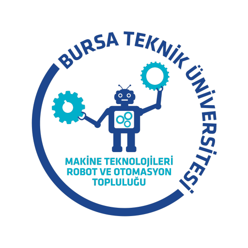
Bursa Teknik Üniversitesi öğrenci toplulukları
MATRO 2025–2026 Faaliyet Raporu
Makine Teknolojileri Robot ve Otomasyon Topluluğu (MATRO) tarafından 2025–2026 akademik yılında gerçekleştirilen eğitim, teknik gezi, stant, sosyal sorumluluk, yarışma ve proje faaliyetlerinin raporudur.
Topluluk
Makine Teknolojileri Robot ve Otomasyon Topluluğu
Kuruluş
2013
Topluluk başkanı
Irmak KaraağaÇ
Akademik danışman
Doç. Dr. Mehmet Onur GenÇ
Danışman mühendis
Muhammed Ataman
Hazırlayan
MATRO Yönetim Kurulu
Atölye
Özdemir Bayraktar TEKNOFEST Atölyesi
İletişim
matroiletisim@gmail.com · btumatro.com
Sunuş
Bir sezon, 45 faaliyet
MATRO; Bursa Teknik Üniversitesi'nde insansız hava, kara, deniz ve su altı sistemleri, robotik, haberleşme ve enerji teknolojileri alanlarında proje geliştiren öğrenci topluluğudur.
2025–2026 döneminde yeni üyelerimizi eğitim kamplarıyla atölyeye hazırladık, sanayinin önde gelen kuruluşlarına teknik geziler düzenledik, fuar ve festivallerde stant açtık, ilkokuldan liseye 500 öğrenciyle buluştuk ve 12 farklı TEKNOFEST kategorisinde proje yürüttük. Sezonun sonunda 8 takımımız TEKNOFEST finallerinde üniversitemizi temsil etti.
Bu rapor, topluluğumuzun üniversiteye sunduğu faaliyet raporundan derlenmiştir. 45 faaliyetin her biri numaralı bir kartta; tarih, yer, katılımcı sayısı, bütçe, kullanılan araç gereç ve iş birliği yapılan kurumlarla birlikte yer alıyor.
Bu sezon kapılarını açan kurumlara, destek veren sponsorlarımıza, bizi ağırlayan okullara ve atölyenin ışığını yakan tüm üyelerimize teşekkür ederiz.
MATRO Yönetim Kurulu
03
ToplulukMATRO · Faaliyet Raporu 2025–2026
Topluluk
Biz kimiz?
Bursa Teknik Üniversitesi bünyesinde 2013 yılında kurulan Makine Teknolojileri Robot ve Otomasyon Topluluğu (MATRO), ülkemizin "Milli Teknoloji Hamlesi" hedefinin ışığında, teknoloji alanındaki ilerleyişte pay sahibi olmak için çalışmalarını sürdüren bir öğrenci topluluğudur.
Başta insansız hava araçları, sualtı robotları, kara ve deniz araçları, hava savunma sistemleri, kablosuz haberleşme, çevre-enerji teknolojileri ve akıllı sistemler olmak üzere farklı disiplinlerde projeler geliştiriyor; üyelerimize pratik mühendislik deneyimi kazandırarak onları profesyonel hayata hazırlıyoruz.
Vizyon
Ülkemizin yarınlarını kuracağının bilincinde, mühendis adaylarını yetiştirmenin öneminin farkındalığı içerisinde, "daima gelişmek" hedefiyle teknolojik alanlardaki çalışmalarını sürdürerek; inandıkları ilkeler doğrultusunda yaptıklarıyla anılan, geleceğin teknolojilerine yön veren ve topluma örnek olan bir topluluk olmaktır.
Misyon
Robotik, havacılık, savunma, çevre-enerji ve akıllı sistem teknolojileri alanlarında; gereksinimler doğrultusunda yenilikçi ve özgün fikirler üretmektir. Faaliyet gösterdiği disiplinlerde başarılar elde ederek Türkiye'nin teknolojik alanda dışa bağımlılığını azaltmasına katkıda bulunmaktır.
01
İnovasyon ve Yaratıcılık
Sürekli yeni fikirlerin peşinde koşar, kalıpların dışında düşünür, karşılaştığımız problemlere özgün ve uygulanabilir çözümler üretiriz.
02
Takım Çalışması ve İşbirliği
Başarının, farklı yeteneklerin ve fikirlerin bir araya geldiği uyumlu bir takım ruhuyla mümkün olduğuna inanırız.
03
Sürekli Öğrenme ve Gelişim
"Daima gelişmek" ilkesiyle bilgilerimizi güncel tutmayı ve yaşam boyu öğrenme felsefesini benimseriz.
04
Milli Bilinç ve Sorumluluk
Projelerimizde yerli ve milli çözümlere öncelik vererek ülkemizin teknolojik bağımsızlığına hizmet ederiz.
2013kuruluş
13proje takımı
50kayıtlı derece
7birincilik
04
ToplulukMATRO · Faaliyet Raporu 2025–2026
Topluluk
2013'ten bugüne
2013
MATRO kuruldu
Bursa Teknik Üniversitesi bünyesinde Makine Teknolojileri Robot ve Otomasyon Topluluğu kuruldu. Aynı yıl LAGARİ adlı insansız hava aracımızla Future Flight Design yarışmasında Dünya 2.si olduk.
2019
İlk TEKNOFEST dereceleri
Tarım Teknolojileri'nde Türkiye 3.lüğü ve İnsansız Sualtı Sistemleri'nde Türkiye 7.liği kazanıldı.
2020
Uçan Araba'da Türkiye şampiyonluğu
TEKNOFEST Baykar Uçan Araba kategorisinde Türkiye 1.liği elde edildi.
2021
Uluslararası arenaya açılım
Renault Twizy Contest'te Dünya 4.lüğü ve Türkiye 1.liği; TEKNOFEST'te üç ayrı kategoride derece.
2022
Dünya finali
Singapur SAUVC Otonom Sualtı Aracı yarışmasında dünya finalisti olundu.
2023
Girişimcilik başarısı
INNOSENS Robot Teknolojileri ile TEKNOFEST T3 Girişimcilik Yarışması'nda Türkiye 1.liği kazanıldı.
2024
Yapay zekâ ve uzay
NASA Space Apps Challenge Bölge 1.liği ve GDG Yapay Zekâ Hackathonu Türkiye 1.liği elde edildi.
2025
Altı kategoride birden finalde
MATROVER ile İnsansız Kara Aracı Türkiye 3.lüğü; Çevre ve Enerji'de Türkiye 7.liği, Sanayide Dijital'de Türkiye 8.liği, Hava Savunma'da rapor 3.lüğü ve sualtı, deniz, kara araçlarında finalistlikler.
2026
Sekiz takım TEKNOFEST finalinde
ASHİNA, LUNA İKA, LODOS, PRUSA, ZEMHERİ, MATRİS, PUSULA ve ANDROMEDA takımlarımız TEKNOFEST 2026 finallerinde Türkiye'nin dört bir yanında üniversitemizi temsil etti. Su Altı Roket kategorisine ilk kez katılan ZEMHERİ ilk yılında finalist oldu; Genç Ticaret Elçileri Yarışması'nda birincilik kazanıldı.
05
ToplulukMATRO · Faaliyet Raporu 2025–2026
Topluluk
Nasıl çalışıyoruz?
MATRO; yönetim kurulu, ekip yöneticileri ve proje takımı kaptanlarından oluşan bir yapı ile yürütülür. Yönetim kurulu, topluluğun işleyişini dört ekip altında paylaşır.
Atölye Ekibi
Atölye düzeni ve denetiminden, takımlar arası iletişimden ve takım koordinasyonluğundan sorumludur.
Sponsorluk Ekibi
Topluluğun ihtiyaçlarını karşılamak için iş birlikleri kurarak sponsorluk süreçlerini yürütür.
Organizasyon Ekibi
Etkinlikler planlar ve etkinlik süreçleri organize ederek topluluk içi faaliyetleri güçlendirir.
Sosyal Medya Ekibi
Topluluğun dijital yüzünü oluşturur, paylaşımlar ve içeriklerle görünürlüğü artırır.
13 proje takımı
ASHİNA
İnsansız Hava Araçları Sistemleri
2026 Finalisti
MATROVER & LUNA
İnsansız ve Tarımsal İnsansız Kara Araçları
2026 Finalisti
İDA
İnsansız Deniz Aracı
2026 Finalisti
İSS
İnsansız Su Altı Sistemleri
2026 Finalisti
ZEMHERİ
Su Altı Roket Sistemleri
2026 Finalisti
MATRİS
Sürü İnsansız Hava Aracı
2026 Finalisti
SANAYİDE DİJİTAL TEKNOLOJİLER
Endüstri 4.0 ve Dijital İkiz
2026 Finalisti
GÖKSAV
Hava Savunma Sistemleri (ASHİNA-H)
ALHAZEN
Çevre ve Enerji Teknolojileri
BÜRKÜT
Uçan Araba Simülasyonu
ÇAĞRI
Kablosuz Haberleşme
GİRİŞİMCİLİK VE İNOVASYON
Ürünleşme ve Teknoloji Girişimciliği
ASHİNA İNOVASYON
Tarım Teknolojileri
06
Sezon özetiMATRO · Faaliyet Raporu 2025–2026
Sezon özeti
Sayılarla 2025–2026
45faaliyeteğitim, gezi, stant, okul programı, yarışma, proje ve sosyal etkinlik
2.034toplam katılımfaaliyet başına bildirilen katılımcı sayılarının toplamı
12TEKNOFEST projesi192 öğrenci görev aldı
7teknik gezihavacılık, savunma, Ar-Ge ve sanayi
500okul öğrencisi6 okul programında
28+kurumla iş birliğisanayi, kamu, okul ve sivil toplum
Aylara göre faaliyet sayısı
Eyl
3Eki
3Kas
8Ara
Oca
1Şub
3Mar
3Nis
6May
2Haz
Tarihi ay düzeyinde bilinen faaliyetler; sezon boyunca süren TEKNOFEST proje çalışmaları dahil değildir.
Sezonun dereceleri
1.Genç Ticaret Elçileri Yarışması
3.TEKNOFEST İnsansız Kara Aracı
3. 4. 5.TEKNOFEST Sürecini 5 Dakikada Anlat
3.Advance-Up Hackathon
8takım TEKNOFEST 2026 finalinde
07
Sezon özetiMATRO · Faaliyet Raporu 2025–2026
Sezon özeti
Bütçe
Faaliyet raporunda her etkinlik için bildirilen harcamaların bölümlere göre dağılımı. 45 faaliyetin 30 tanesinde harcama belirtilmiş; diğerleri kurum desteğiyle veya harcama olmadan gerçekleşti.
2.009.300 TLtoplam harcama
01Topluluk ve Eğitim12.250 TL5/5
02Sanayi ile Buluşma26.000 TL2/8
03Fuarlar ve Stantlar4.700 TL2/4
04Yeni Nesil Mühendisler15.200 TL3/6
05Deneyim ve Başarılar22.750 TL3/7
06TEKNOFEST Projeleri1.923.000 TL12/12
07Takım Ruhu5.400 TL3/3
En yüksek bütçeli faaliyetler
38İleri Otonom Sistemler Tasarım ve Operasyon450.000 TL
37MATROVER İnsansız Kara Aracı320.000 TL
33ZEMHERİ Su Altı Roket270.000 TL
32MATRİS Sürü İnsansız Hava Aracı250.000 TL
31ASHİNA İnsansız Hava Aracı150.000 TL
34İSS İnsansız Su Altı Sistemleri150.000 TL
35LODOS İnsansız Deniz Aracı120.000 TL
36GÖKSAV Hava Savunma Sistemleri90.000 TL
Tutarlar faaliyet raporundaki "Harcanan bütçe" satırlarından alınmıştır. Sponsorların ayni ve nakdi destekleri bu tutarlara dahil olabilir.
08
Bölüm01
Topluluk ve Eğitim
Her dönem yeni üyelerle başlayan yolculuğumuz, tanışma buluşmaları ve atölyede biten eğitim kamplarıyla sürüyor. Amacımız, ilk gün amfide oturan öğrencinin sezon sonunda bir proje takımında sorumluluk alabilmesi.
5faaliyet
619katılım
12.250 TLbütçe
01Tanışma ve Bilgilendirme Toplantısı
02Tanışma Kahvaltısı
03MATRO Genel Eğitim
041. Eğitim Kampı
052. Eğitim Kampı
09
01 · Topluluk ve EğitimMATRO · Faaliyet Raporu 2025–2026
01
01 · Topluluk ve Eğitim
Tanışma ve Bilgilendirme Toplantısı
Yeni üyelerimize topluluğun vizyonunu, çalışma alanlarını ve gelecek projelerini aktardığımız geniş katılımlı oryantasyon toplantısı.
Yeni dönemin ilk buluşmasında topluluğa katılan üyelerimizi üniversitemiz amfisinde ağırladık. Oryantasyon niteliğindeki toplantıda MATRO'nun vizyonunu, çalışma alanlarını, proje takımlarını ve sezon boyunca hayata geçirmeyi planladığımız projeleri anlattık. Konferansın ardından TEKNOFEST hazırlık sürecinin yürütüldüğü atölyemizi birlikte gezdik; yeni üyeler üretim ortamını yerinde görme ve takımlarla tanışma fırsatı buldu.
Tarih
15 Ekim 2025
Katılımcı
150 kişi
Bütçe
1.500 TL
Yer
BTÜ Amfi
Araç gereç
Konferans salonu, ses ve görüntü sistemleri, tanıtım sunumu, kürsü ve mikrofon
İş birliği
–
02
01 · Topluluk ve Eğitim
Tanışma Kahvaltısı
Yeni üyelerle kaynaşmak, iletişimi ve takım ruhunu güçlendirmek için düzenlediğimiz toplu kahvaltı.
Amfide tanıştığımız yeni üyelerle bu kez aynı masaya oturduk. Bugii Lounge'da düzenlediğimiz toplu kahvaltının amacı, yeni üyelerle kaynaşmak ve üyeler arasındaki iletişimi, takım ruhunu en baştan güçlü kurmaktı. Farklı proje takımlarından eski üyelerle yeni katılanların atölye dışında, rahat bir ortamda tanışması sezon boyunca birlikte çalışacak ekiplerin ilk bağlarını oluşturdu.
Tarih
25 Ekim 2025
Katılımcı
65 kişi
Bütçe
2.000 TL
Yer
Bugii Lounge
Araç gereç
Organizasyon ekipmanları
İş birliği
Bugii Lounge
10
01 · Topluluk ve EğitimMATRO · Faaliyet Raporu 2025–2026
03
01 · Topluluk ve Eğitim
MATRO Genel Eğitim
Mühendislik yaklaşımı, proje geliştirme mantığı, tasarım süreçleri ve yazılımın temelleri; yeni üyelerin teknik süreçlere hızla uyum sağlaması için.
Eğitim programımızın açılışı olan genel eğitimde topluluk üyelerine temel mühendislik, tasarım ve yazılım konularında eğitim verdik. Mühendislik yaklaşımı, proje geliştirme mantığı, tasarım süreçleri ve yazılım çalışmalarında dikkat edilmesi gereken temel noktalar ele alındı. Amacımız yeni üyelerin topluluk çalışmalarını tanıması, teknik süreçlere hızla uyum sağlaması ve eğitim kampına ortak bir zeminle başlamasıydı.
Tarih
13 Kasım 2025
Katılımcı
157 kişi
Bütçe
1.250 TL
Yer
BTÜ
Araç gereç
Sunum materyalleri, bilgisayar, projeksiyon ve eğitim içerikleri
İş birliği
–
04
01 · Topluluk ve Eğitim
1. Eğitim Kampı
Bir ay süren yoğunlaştırılmış atölye ve eğitim programı: mühendislik temelleri, tasarım, takım çalışması ve problem çözme; öğrenilenler atölyede uygulandı.
Sezonun en uzun faaliyeti olan kampta üyelerin teknik becerilerini geliştirmek için yoğunlaştırılmış bir atölye ve eğitim programı uyguladık. Mekanikte SolidWorks, CATIA, eklemeli ve talaşlı imalat; elektronikte devre temelleri, robotik elektronik ve kart tasarımı; yazılımda algoritma, görüntü işleme, gömülü ve robotik yazılım işlendi. Takım çalışması ve problem çözme yaklaşımları da ele alındı; üyeler öğrendiklerini atölyede uyguladı. 13 Kasım'da genel eğitimle başlayan 32 ders saatlik programı yüzde 75 devam şartıyla tamamlayan 61 üyemiz sertifika almaya hak kazandı.
Tarih
10 Aralık 2025 – 9 Ocak 2026
Katılımcı
157 kişi
Bütçe
3.000 TL
Yer
BTÜ
Araç gereç
Atölye ekipmanları, bilgisayarlar, sunum materyalleri ve eğitim içerikleri
İş birliği
–
11
01 · Topluluk ve EğitimMATRO · Faaliyet Raporu 2025–2026
05
01 · Topluluk ve Eğitim
2. Eğitim Kampı
Proje dönemine hazırlık için ileri seviye tasarım, simülasyonla test, kodlama ve hata ayıklama; katılımcılar ekipler hâlinde teknik problemleri analiz etti.
Proje dönemine hazırlık için ileri seviye tasarım, simülasyon ve kodlama çalışmalarının yapıldığı ikinci kampta hem yeni konular işledik hem de ilk kampta atılan temeli sağlamlaştırdık. Tasarım geliştirme, simülasyonla test etme, kodlama mantığı ve hata çözümleme konuları ele alındı; katılımcılar ekipler hâlinde çalışarak teknik problemleri analiz etti. Kampın hedefi, üyelerin proje süreçlerine hazır hâle gelmesi ve ileri seviye teknik beceriler kazanmasıydı.
Tarih
26 Şubat – 1 Mart 2026
Katılımcı
90 kişi
Bütçe
4.500 TL
Yer
BTÜ
Araç gereç
Bilgisayarlar, simülasyon ortamları, kodlama araçları ve tasarım materyalleri
İş birliği
–
12
Bölüm02
Sanayi ile Buluşma
Teorik bilgiyi sahadaki uygulamayla birleştirmek için havacılık, savunma, otomotiv ve Ar-Ge kuruluşlarına teknik geziler düzenledik; sektörün mühendislerini kampüse davet ettik.
8faaliyet
297katılım
26.000 TLbütçe
06Turkish Technic Teknik Gezisi
07TÜBİTAK MAM Teknik Gezisi
08ERTEV – Ermetal Teknik Gezisi
09HKTM Teknik Gezisi
10Turkish Technic Workshop
11Alp Havacılık Teknik Gezisi
12GUHEM Ziyareti
13TUSAŞ Teknik Gezi XL
13
02 · Sanayi ile BuluşmaMATRO · Faaliyet Raporu 2025–2026
06
02 · Sanayi ile Buluşma
Turkish Technic Teknik Gezisi
Havacılık, savunma ve motor alanındaki mühendislik faaliyetlerini hangarda yerinde inceledik. Katılımcılar teorik bilgilerini endüstriyel pratikle birleştirdi, sektördeki iş ve staj imkânları hakkında doğrudan bilgi aldı.
Havacılık, savunma sanayii ve güç/motor alanındaki güncel mühendislik faaliyetlerini yerinde incelemek için Turkish Airlines'ın bakım kuruluşu Turkish Technic'in tesislerine 30 kişilik bir ekiple teknik gezi düzenledik. Gezi, katılımcıların teorik bilgilerini endüstriyel pratikle birleştirmesine imkân tanıdı. Havacılık sektöründeki iş ve staj imkânları hakkında doğrudan bilgi almaları, üyelerimizin kariyer planlamalarına önemli bir vizyon kattı.
Tarih
Aralık 2025
Katılımcı
30 kişi
Bütçe
–
Yer
Turkish Technic, İstanbul
Araç gereç
–
İş birliği
Turkish Technic
07
02 · Sanayi ile Buluşma
TÜBİTAK MAM Teknik Gezisi
Türkiye'nin önde gelen Ar-Ge merkezlerinden birinde laboratuvarları, elektrikli araç projelerini ve ileri düzey mühendislik çalışmalarını gözlemledik.
Türkiye'nin önde gelen Ar-Ge merkezlerinden TÜBİTAK Marmara Araştırma Merkezi'ne 10 kişilik bir öğrenci grubuyla teknik inceleme gezisi yaptık. Merkezin araştırma-geliştirme süreçlerini, laboratuvar altyapısını, elektrikli araç projelerini ve sahadaki ileri düzey mühendislik faaliyetlerini yerinde inceledik. Akademik araştırma ile uygulamalı mühendisliğin buluştuğu bir ortamı görmek üyelerimiz için değerli bir deneyim oldu.
Tarih
9 Aralık 2025
Katılımcı
10 kişi
Bütçe
–
Yer
TÜBİTAK Marmara Araştırma Merkezi
Araç gereç
–
İş birliği
TÜBİTAK MAM
14
02 · Sanayi ile BuluşmaMATRO · Faaliyet Raporu 2025–2026
08
02 · Sanayi ile Buluşma
ERTEV – Ermetal Teknik Gezisi
Mekatronik Mühendisleri Derneği iş birliğiyle üretim alanlarını, kullanılan teknolojileri ve çalışma süreçlerini yerinde tanıdık.
Mekatronik Mühendisleri Derneği iş birliğiyle Ermetal Grup Şirketleri'ne teknik gezi düzenledik. Üretim alanlarını adım adım gezerek kullanılan teknolojiler, çalışma düzeni ve süreç planlaması hakkında ayrıntılı bilgi edindik. Katılımcılar teorik bilgilerin sahadaki uygulamalarını görme ve sektörün işleyişini yakından tanıma fırsatı buldu. Paylaşılan bilgiler ve aktarılan tecrübeler üyelerimizin mesleki bakış açısını geliştirdi.
Tarih
16 Aralık 2025
Katılımcı
20 kişi
Bütçe
–
Yer
Ermetal Grup Şirketleri, Bursa
Araç gereç
Ulaşım ve bilgilendirme araçları
İş birliği
ERTEV, Ermetal Grup Şirketleri, Mekatronik Mühendisleri Derneği
09
02 · Sanayi ile Buluşma
HKTM Teknik Gezisi
Hareket kontrol teknolojileri ve mekatronik sistemlerdeki mühendislik çözümlerini inceledik; firmanın yönetim kurulu başkanı ekibimizi ağırladı.
Hareket kontrol teknolojileri ve mekatronik sistemler alanındaki mühendislik çözümlerini yerinde incelemek için Gebze'deki Hidropar Hareket Kontrol Teknolojileri Merkezi'ne 38 kişilik bir ekiple teknik gezi yaptık. Robotik sistemler, kontrol teknolojileri ve endüstriyel otomasyon çözümlerine yönelik üretim ve mühendislik süreçlerini inceledik; tesisin yeşil fabrika uygulamaları, enerji verimliliği çözümleri ve çevre dostu üretim anlayışı hakkında bilgi aldık. Firmanın yönetim kurulu başkanı ekibimizi bizzat ağırladı.
Tarih
2 Mart 2026
Katılımcı
38 kişi
Bütçe
20.000 TL
Yer
HKTM Fabrikası, Gebze
Araç gereç
–
İş birliği
HKTM Hidropar Hareket Kontrol Teknolojileri Merkezi
15
02 · Sanayi ile BuluşmaMATRO · Faaliyet Raporu 2025–2026
10
02 · Sanayi ile Buluşma
Turkish Technic Workshop
Havacılık teknolojileri ve uçak bakım-onarım süreçleri üzerine sunumun ardından düzenlenen workshop'ta katılımcılar gerçek saha problemleri üzerinde ekipler hâlinde çalıştı; sanayi ile mühendislik öğrencileri arasındaki bağ güçlendi.
Aralık'ta tesislerini gezdiğimiz Turkish Technic'i bu kez kampüste ağırladık. UHSST ve PARGE iş birliğiyle BTÜ E Blok Mavi Salon'da düzenlenen etkinlikte önce havacılık teknolojileri ve uçak bakım-onarım süreçleri üzerine bir sunum yapıldı; ardından gerçekleştirilen workshop'ta katılımcılar problem çözme çalışmaları yürüttü. 150 katılımcıyla sezonun en kalabalık sektör etkinliği olan buluşma, sanayi ile mühendislik öğrencileri arasındaki ilişkiyi güçlendirdi.
Tarih
10 Mart 2026
Katılımcı
150 kişi
Bütçe
–
Yer
BTÜ E Blok, Mavi Salon
Araç gereç
BTÜ E Blok, Mavi Salon
İş birliği
Turkish Technic, UHSST, PARGE
11
02 · Sanayi ile Buluşma
Alp Havacılık Teknik Gezisi
Havacılıkta üretim, tasarım, bakım ve mühendislik süreçlerini; mühendislik ekiplerinin çalışma düzenini yerinde gözlemledik.
Eskişehir'deki Alp Havacılık'a düzenlediğimiz teknik gezide havacılık sektöründeki üretim, tasarım, bakım ve mühendislik süreçlerini yerinde inceledik. Katılımcılar sektörde kullanılan yöntemleri ve mühendislik ekiplerinin çalışma düzenini gözlemleme, sektörde çalışan mühendislerden kariyer yolculuklarını dinleme fırsatı buldu. Gezinin hedefi üyelerin havacılık alanına ilgisini artırmak, mesleki farkındalık kazandırmak ve kariyer planlamalarına katkı sağlamaktı.
Tarih
26 Mart 2026
Katılımcı
28 kişi
Bütçe
–
Yer
Alp Havacılık, Eskişehir
Araç gereç
Ulaşım ve bilgilendirme araçları
İş birliği
Alp Havacılık
16
02 · Sanayi ile BuluşmaMATRO · Faaliyet Raporu 2025–2026
12
02 · Sanayi ile Buluşma
GUHEM Ziyareti
Türkiye'nin uzay vizyonunu inceledik; Türkiye Milli Uzay Programı kapsamında ilk astronotumuz Alper Gezeravcı'nın sunumunu dinledik.
Bursa'daki Gökmen Uzay Havacılık Eğitim Merkezi'ne (GUHEM) giderek Türkiye'nin uzay vizyonunu ve havacılık çalışmalarını inceledik. Ziyaretin en özel anı, Türkiye Milli Uzay Programı kapsamında Uluslararası Uzay İstasyonu'na giden ilk astronotumuz Alper Gezeravcı'nın sunumunu dinlemek oldu. BTSO öncülüğünde ve TÜBİTAK desteğiyle kurulan GUHEM, Avrupa'nın en büyük uzay eğitim merkezleri arasında gösteriliyor.
Tarih
7 Nisan 2026
Katılımcı
18 kişi
Bütçe
–
Yer
Gökmen Uzay Havacılık Eğitim Merkezi, Bursa
Araç gereç
Ulaşım ve bilgilendirme araçları
İş birliği
GUHEM
13
02 · Sanayi ile Buluşma
TUSAŞ Teknik Gezi XL
Topluluğumuzu temsilen katıldığımız programda yerli ve milli havacılık ve uzay projelerini, üretim hatlarını ve mühendislik altyapısını yerinde inceledik.
Ülkemizin savunma sanayii ve havacılık ekosistemindeki Ar-Ge ve üretim kabiliyetlerini yerinde gözlemlemek için Türk Havacılık ve Uzay Sanayii'nin (TUSAŞ) Ankara'daki tesislerinde düzenlenen Teknik Gezi XL programına topluluğumuzu temsilen katıldık. Ziyarette yerli ve milli imkânlarla geliştirilen havacılık ve uzay projeleri, üretim hatları ve mühendislik altyapısı teknik düzeyde incelendi.
Tarih
17 Mayıs 2026
Katılımcı
3 kişi
Bütçe
6.000 TL
Yer
TUSAŞ Tesisleri, Ankara
Araç gereç
Ulaşım ve bilgilendirme araçları
İş birliği
TUSAŞ
17
Bölüm03
Fuarlar ve Stantlar
Robotlarımızı atölyeden çıkarıp fuar alanlarına, festivallere ve kampüs etkinliklerine taşıdık. Her stant, projelerimizi yeni insanlara anlatma ve iş birlikleri kurma fırsatı oldu.
4faaliyet
140katılım
4.700 TLbütçe
14GDG Bursa DevFest
15BTÜ Robot Günleri
16MEEXX Makine Fuarı
17UHALFEST
18
03 · Fuarlar ve StantlarMATRO · Faaliyet Raporu 2025–2026
14
03 · Fuarlar ve Stantlar
GDG Bursa DevFest
Bursa'nın en büyük yazılım ve teknoloji festivalinde topluluk partneri olarak projelerimizi yazılımcılara ve sektöre tanıttık.
Google Developer Groups (GDG) Bursa'nın düzenlediği, Bursa'nın en büyük yazılım ve teknoloji festivali DevFest'25'te topluluk partneri olarak yer aldık ve standımızda projelerimizi yazılımcılara ve sektöre tanıttık. Yazılım, yapay zekâ ve teknoloji ekosisteminin buluştuğu festival, üyelerimizin farklı disiplinlerden geliştiricilerle tanışması ve güncel teknolojileri yakından takip etmesi açısından değerli bir buluşma oldu.
Tarih
Kasım 2025
Katılımcı
50 kişi
Bütçe
2.200 TL
Yer
Merinos AKKM
Araç gereç
–
İş birliği
GDG Bursa
15
03 · Fuarlar ve Stantlar
BTÜ Robot Günleri
Geliştirdiğimiz robotik projeleri ve kazandığımız ödülleri ziyaretçilere ve öğrencilere sergilediğimiz tanıtım standı.
Üniversitemizin ROTASAM ve Mekatronik Mühendisliği Bölümü tarafından bu yıl ikincisi düzenlenen BTÜ Robot Günleri'nde tanıtım standımızla yer aldık. Standımızda geliştirdiğimiz robotik projeleri ve kazandığımız ödülleri sergiledik, sektörden birçok kişiyle görüştük. Etkinlik boyunca alanında uzman konuşmacıları dinledik; robotik sistemler, yapay zekâ ve akıllı dönüşüm konularındaki MATLAB eğitimlerine katıldık.
Tarih
13 Kasım 2025
Katılımcı
20 kişi
Bütçe
–
Yer
Bursa Teknik Üniversitesi
Araç gereç
Tanıtım masası ve stant ekipmanları
İş birliği
–
19
03 · Fuarlar ve StantlarMATRO · Faaliyet Raporu 2025–2026
16
03 · Fuarlar ve Stantlar
MEEXX Makine Fuarı
Endüstriyel makine ve imalat teknolojilerindeki gelişmeleri takip etmek ve topluluğu tanıtmak için kendi standımızı açtık.
3–6 Aralık 2025'te Bursa Fuar Merkezi'nde düzenlenen MEEXX Makine ve Teknolojileri Fuarı'nda BTSO iş birliğiyle kendi standımızı açtık. Makine imalatından robotik ve otomasyona, dijital fabrikalardan endüstriyel çözümlere kadar sektörün güncel teknolojilerini yakından inceledik. Standımızı ziyaret edenlerle çalışmalarımızı paylaştık, farklı disiplinlerden mühendis ve öğrencilerle tanıştık.
Tarih
3 Aralık 2025
Katılımcı
50 kişi
Bütçe
2.500 TL
Yer
Bursa Fuar Merkezi
Araç gereç
Araç ve şoför
İş birliği
BTSO
17
03 · Fuarlar ve Stantlar
UHALFEST
Havacılık ve teknoloji festivalinde insansız sistem prototiplerimizi ve ödüllerimizi sergileyerek ziyaretçileri bilgilendirdik.
Havacılık ve teknoloji festivali UHALFEST kapsamında tanıtım standı kurduk. Standımızda topluluğun çalışmalarını, geliştirdiğimiz insansız sistem prototiplerini ve kazandığımız ödülleri sergiledik; ziyaretçilere projelerimiz hakkında bilgi verdik.
Tarih
6 Mayıs 2026
Katılımcı
20 kişi
Bütçe
–
Yer
UHALFEST Etkinlik Alanı
Araç gereç
Tanıtım standı, afişler, insansız sistem prototipleri ve sunum materyalleri
İş birliği
–
20
Bölüm04
Yeni Nesil Mühendisler
İlkokuldan liseye kadar farklı yaş gruplarındaki öğrencilerle buluştuk. Atölyemizi gezdirdik, okullara robotlarımızı götürdük, Arduino ile ilk devrelerini kurdurduk.
6faaliyet
500katılım
15.200 TLbütçe
18Veliköy Mesleki ve Teknik Anadolu Lisesi
19Yerli Malı Haftası: Milli Araçlarımızı Tanıyoruz
20Arduino Eğitimi
21Bursa Büyük Kolej Bilim Haftası
22TEKNOFEST Tecrübe Paylaşımı ve Atölye Gezisi
23Tugay Ciner İlköğretim Okulu Atölye Ziyareti
21
04 · Yeni Nesil MühendislerMATRO · Faaliyet Raporu 2025–2026
18
04 · Yeni Nesil Mühendisler
Veliköy Mesleki ve Teknik Anadolu Lisesi
Tekirdağ'dan gelen lise öğrencilerini atölyemizde ağırladık; takımlarımız araçlarını ve üretim süreçlerini anlattı.
Tekirdağ Veliköy OSB Mesleki ve Teknik Anadolu Lisesi'nden gelen 80 öğrenciyi BTÜ Özdemir Bayraktar TEKNOFEST Atölyesi'nde ağırladık. Ziyaret boyunca projelerimiz ve teknik süreçlerimiz hakkında bilgi paylaştık; öğrencilerle mühendislik ve üretim alanlarına dair sohbetler gerçekleştirdik. Geleceğin mühendis ve teknisyenlerine ilham olmak ve gelişim yolculuklarına katkı sunmak topluluğumuz için değerli bir sorumluluk.
Tarih
10 Ekim 2025
Katılımcı
80 kişi
Bütçe
–
Yer
BTÜ Özdemir Bayraktar TEKNOFEST Atölyesi
Araç gereç
BTÜ Özdemir Bayraktar TEKNOFEST Atölyesi
İş birliği
–
19
04 · Yeni Nesil Mühendisler
Yerli Malı Haftası: Milli Araçlarımızı Tanıyoruz
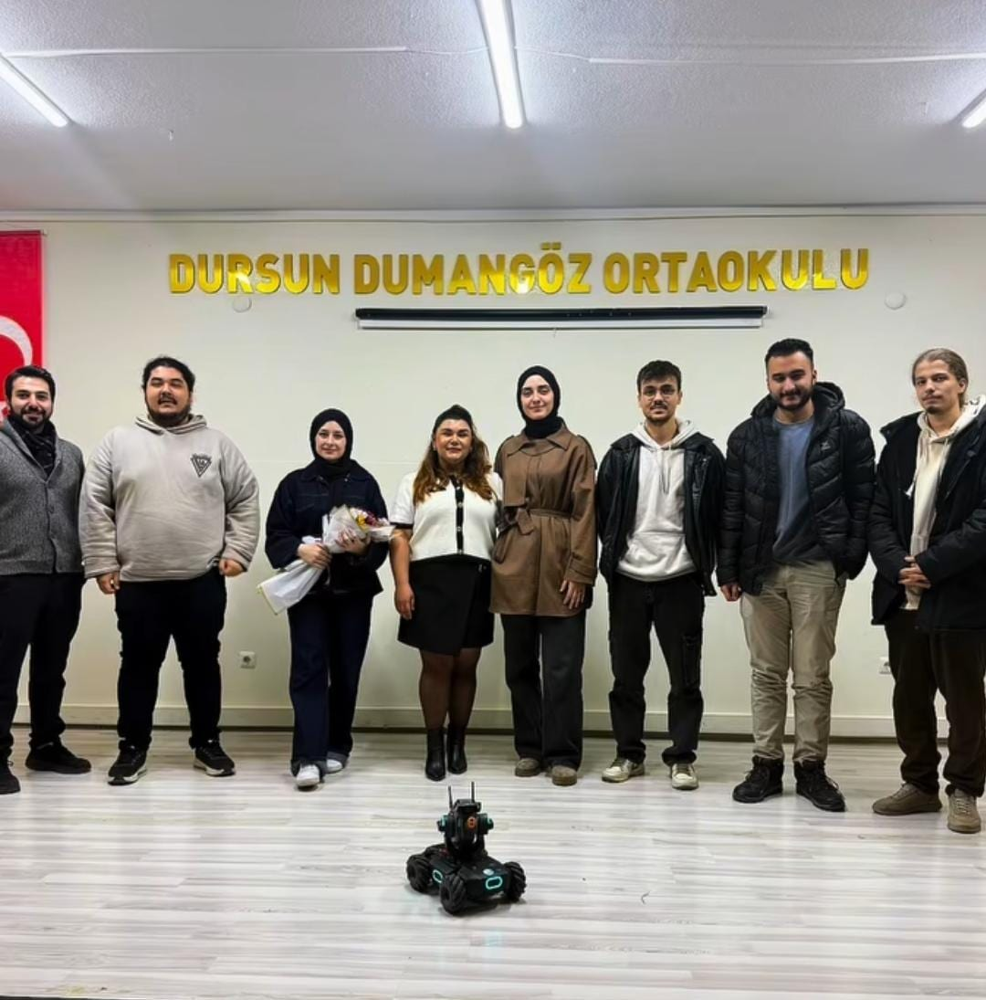
İlkokul öğrencilerine milli teknoloji hamlesini ve otonom araçlarımızı tanıtarak mühendisliği sevdirmeyi amaçlayan sosyal sorumluluk programı. Sezonun en kalabalık buluşması: 300 öğrenci.
Yerli Malı Haftası kapsamında ilkokul öğrencilerine milli teknoloji hamlesini ve geliştirdiğimiz otonom araçları tanıttık. Mühendisliği erken yaşta sevdirmeyi amaçlayan bu sosyal sorumluluk programı 300 öğrenciyle sezonun en kalabalık buluşması oldu.
Tarih
Aralık 2025
Katılımcı
300 kişi
Bütçe
6.500 TL
Yer
Armutlu Avukat Necati Toker İlkokulu
Araç gereç
–
İş birliği
Armutlu Avukat Necati Toker İlkokulu
22
04 · Yeni Nesil MühendislerMATRO · Faaliyet Raporu 2025–2026
20
04 · Yeni Nesil Mühendisler
Arduino Eğitimi
Lise öğrencilerine temel devre elemanlarını ve algoritma mantığını aktaran giriş seviyesi eğitim.
Uluslararası Murat Hüdavendigar Lisesi öğrencilerine giriş seviyesinde bir Arduino eğitimi verdik. Eğitimde temel devre elemanlarını ve algoritma mantığını aktardık; öğrencilerin elektronik ve programlamaya ilk adımı atmasını hedefledik. Aynı okulun öğrencilerini bir ay sonra atölyemizde de ağırladık.
Tarih
9 Mayıs 2026
Katılımcı
35 kişi
Bütçe
5.700 TL
Yer
Uluslararası Murat Hüdavendigar Lisesi
Araç gereç
Arduino
İş birliği
–
21
04 · Yeni Nesil Mühendisler
Bursa Büyük Kolej Bilim Haftası
Genç öğrencilere bilimi sevdirmek için robotik projelerimizi okul bünyesindeki standımızda sergiledik.
Bursa Büyük Kolej'in bilim haftasında okul bünyesinde stant açtık. Genç öğrencilere bilimi sevdirmek amacıyla robotik projelerimizi sergiledik.
Tarih
13 Mayıs 2026
Katılımcı
35 kişi
Bütçe
3.000 TL
Yer
Bursa Büyük Kolej
Araç gereç
Araç ve şoför
İş birliği
Bursa Büyük Kolej
23
04 · Yeni Nesil MühendislerMATRO · Faaliyet Raporu 2025–2026
22
04 · Yeni Nesil Mühendisler
TEKNOFEST Tecrübe Paylaşımı ve Atölye Gezisi
Liseli öğrencilere TEKNOFEST süreçlerini anlattık, takımlarımızın atölyelerini birlikte gezdik.
Arduino eğitimi verdiğimiz Uluslararası Murat Hüdavendigar Lisesi'nin öğrencilerini bu kez BTÜ Özdemir Bayraktar TEKNOFEST Atölyesi'nde ağırladık. Liseli öğrencilere TEKNOFEST süreçlerine dair bir sunum yaptık, ardından takımlarımızın atölyelerini birlikte gezerek bilgi aktardık.
Tarih
9 Haziran 2026
Katılımcı
25 kişi
Bütçe
–
Yer
BTÜ Özdemir Bayraktar TEKNOFEST Atölyesi
Araç gereç
BTÜ Özdemir Bayraktar TEKNOFEST Atölyesi
İş birliği
Uluslararası Murat Hüdavendigar Lisesi
23
04 · Yeni Nesil Mühendisler
Tugay Ciner İlköğretim Okulu Atölye Ziyareti
İlköğretim öğrencilerinin teknoloji ve mühendislikle erken yaşta tanışması için atölye gezisi.
Sezonun son faaliyetinde Tugay Ciner İlköğretim Okulu öğrencilerini atölyemizde ağırladık. İlköğretim seviyesindeki öğrencilerin teknoloji ve mühendislikle erken yaşta tanışmasını desteklemek amacıyla düzenlenen gezide öğrenciler takımlarımızın çalışma alanlarını ve araçlarını yakından gördü.
Tarih
11 Haziran 2026
Katılımcı
25 kişi
Bütçe
–
Yer
BTÜ Özdemir Bayraktar TEKNOFEST Atölyesi
Araç gereç
Atölye tanıtım materyalleri ve bilgilendirme araçları
İş birliği
Tugay Ciner İlköğretim Okulu
24
Bölüm05
Deneyim ve Başarılar
Yarışmalarda edindiğimiz tecrübeyi paylaşmayı, kazandığımız dereceler kadar önemsiyoruz.
7faaliyet
181katılım
22.750 TLbütçe
24Formula Student Tecrübe Paylaşımı
25BTÜ Bilim Cafe Tecrübe Paylaşımı
26Formula Student Yarışması
27TEKNOFEST Sürecini 5 Dakikada Anlat
28Advance-Up Hackathon
29Astro Hackathon 5
30Genç Ticaret Elçileri Yarışması
25
05 · Deneyim ve BaşarılarMATRO · Faaliyet Raporu 2025–2026
24
05 · Deneyim ve Başarılar
Formula Student Tecrübe Paylaşımı
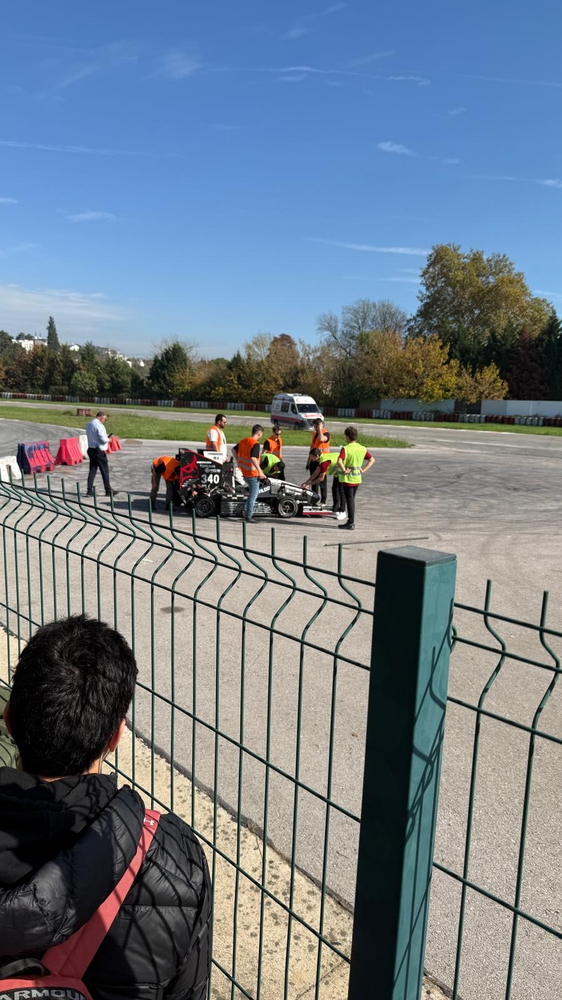
Formula Student yarışmalarında görev alan ekip üyelerimiz deneyimlerini öğrencilere aktardı.
Formula Student yarışmalarında görev almış ekip üyelerimizin deneyimlerini aktardığı bir tecrübe paylaşım programı düzenledik. Konferans salonunda gerçekleşen etkinlikte yarışma sürecinde edinilen deneyimler bu alana ilgi duyan öğrencilerle paylaşıldı.
Tarih
2025
Katılımcı
50 kişi
Bütçe
5.000 TL
Yer
Bursa Teknik Üniversitesi
Araç gereç
Konferans salonu, projeksiyon, ses sistemi ve sunum materyalleri
İş birliği
–
25
05 · Deneyim ve Başarılar
BTÜ Bilim Cafe Tecrübe Paylaşımı
Yarışmalarda derece elde eden üyelerimiz teknik deneyimlerini öğrencilerle paylaştı.
Bursa Teknik Üniversitesi iş birliğiyle düzenlenen Bilim Cafe buluşmasında, yarışmalarda derece elde eden topluluk üyelerimiz teknik deneyimlerini öğrencilerle paylaştı.
Tarih
2025
Katılımcı
35 kişi
Bütçe
–
Yer
Bursa Teknik Üniversitesi
Araç gereç
Sunum ekipmanları, projeksiyon ve ses sistemi
İş birliği
Bursa Teknik Üniversitesi
26
05 · Deneyim ve BaşarılarMATRO · Faaliyet Raporu 2025–2026
26
05 · Deneyim ve Başarılar
Formula Student Yarışması
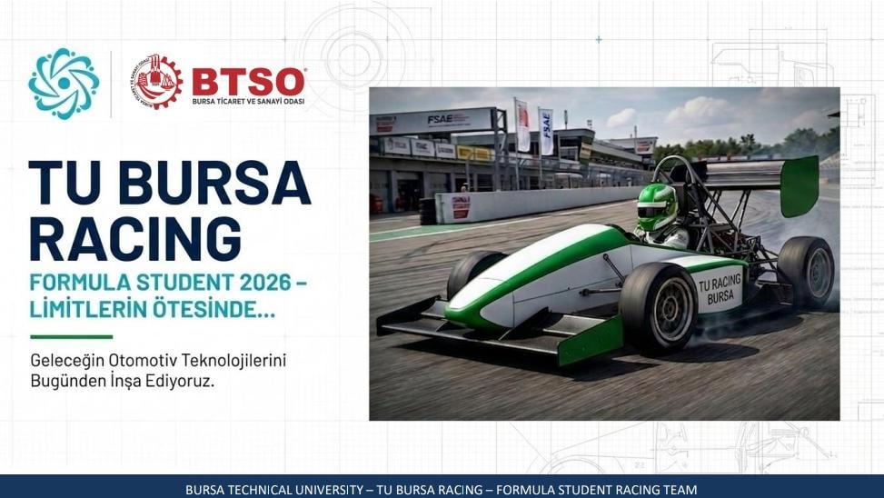
Formula Student yarışmasına hazırlık kapsamında araç tasarımı, mühendislik analizleri ve teknik raporlama süreçleri üzerinde çalışmalar yürütüldü.
Formula Student yarışmasına hazırlık kapsamında 20 üyemiz araç tasarımı, mühendislik analizleri ve teknik raporlama süreçleri üzerinde çalıştı. Çalışmalarda CAD yazılımları, teknik raporlama araçları ve mühendislik tasarım programları kullanıldı.
Tarih
2025
Katılımcı
20 kişi
Bütçe
–
Yer
Bursa Teknik Üniversitesi
Araç gereç
Bilgisayarlar, CAD yazılımları, teknik raporlama araçları ve tasarım programları
İş birliği
–
27
05 · Deneyim ve Başarılar
TEKNOFEST Sürecini 5 Dakikada Anlat
3. 4. 5.
Proje süreçlerini sunan farklı takımlarımız aynı yarışmada üçüncülük, dördüncülük ve beşincilik elde etti.
TEKNOFEST'in başvurudan finallere uzanan tüm aşamalarının ele alındığı etkinlik kapsamındaki yarışmada, projelerini beş dakikada anlatan takımlarımız üçüncülük, dördüncülük ve beşincilik dereceleri elde etti. Jüri başkanlığını T3 Vakfı Yönetim Kurulu Başkanı Dr. Elvan Kuzucu Hıdır yaptı. Teknik özetleme ve sunum performansının ölçüldüğü etkinlik, finalist takımlarımızın deneyim aktarımlarıyla da değer kazandı.
Tarih
12 Aralık 2025
Katılımcı
60 kişi
Bütçe
–
Yer
BTÜ Turkuaz Salon
Araç gereç
Proje sunum materyalleri, bilgisayar ve teknik dokümanlar
İş birliği
TEKNOFEST
27
05 · Deneyim ve BaşarılarMATRO · Faaliyet Raporu 2025–2026
28
05 · Deneyim ve Başarılar
Advance-Up Hackathon
3.
Yazılım ve otonom sistem çözümleri üzerine hackathonda geliştirdiğimiz çözümle üçüncülük.
Yazılım ve otonom sistem çözümleri üzerine düzenlenen Advance-Up Hackathon'a dört kişilik SYNTAX ekibimizle katıldık. Ekibimiz geliştirdiği yenilikçi çözümle yarışmayı üçüncü olarak tamamladı.
Tarih
29 Aralık 2025
Katılımcı
4 kişi
Bütçe
15.000 TL
Yer
Bursa Teknik Üniversitesi
Araç gereç
Dizüstü bilgisayarlar, yazılım geliştirme araçları, internet bağlantısı, sunum ekipmanları
İş birliği
–
29
05 · Deneyim ve Başarılar
Astro Hackathon 5
Uzay teknolojileri ve veri analitiği odaklı hackathonda algoritma geliştirme çalışmaları yürüttük.
Türkiye Uzay Ajansı'nın düzenlediği, uzay teknolojileri ve veri analitiği odaklı Astro Hackathon'a SCENDERS ekibimizle katıldık; takım çalışması içinde algoritma geliştirme çalışmaları yürüttük. Yarışmanın ilk aşaması 35 şehirde eş zamanlı yapıldı; 415 katılımcıyla en yüksek katılım Bursa'dan geldi.
Tarih
1 Nisan 2026
Katılımcı
5 kişi
Bütçe
2.750 TL
Yer
Türkiye Uzay Ajansı
Araç gereç
Bilgisayarlar, veri analizi yazılımları, internet bağlantısı ve sunum araçları
İş birliği
Türkiye Uzay Ajansı
28
05 · Deneyim ve BaşarılarMATRO · Faaliyet Raporu 2025–2026
30
05 · Deneyim ve Başarılar
Genç Ticaret Elçileri Yarışması
1.
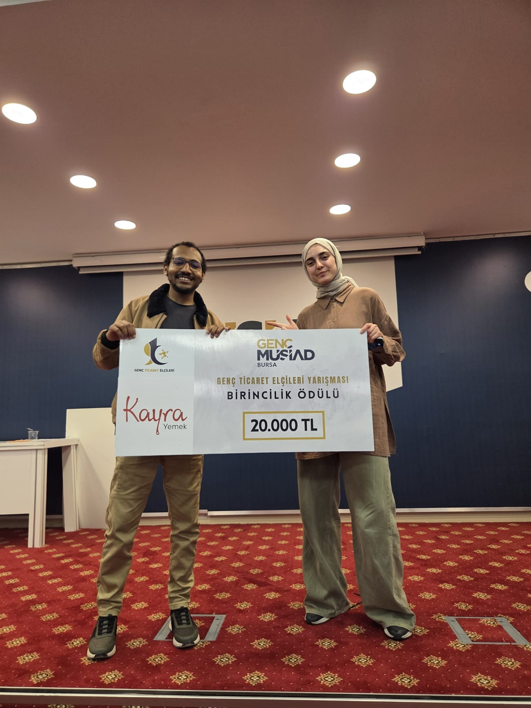
Ar-Ge ve inovasyon çalışmalarıyla geliştirilen, ticari potansiyeli yüksek projemiz teknik jüri değerlendirmesinde birincilik ödülüne layık görüldü.
Genç MÜSİAD Bursa'nın düzenlediği, farklı ülkelerden gençleri bir araya getirerek Türkiye ile kendi ülkeleri arasındaki ticari ve kültürel bağları güçlendirmeyi hedefleyen Genç Ticaret Elçileri Yarışması'nda topluluğumuz birincilik elde etti. Katılımcıların aldığı eğitimlerin, geliştirdikleri projelerin ve bunları hayata geçirme becerilerinin değerlendirildiği yarışmada, teknik jüri değerlendirmeleri, uygulanabilirlik analizleri ve inovasyon kriterleri sonucunda Türkiye'den Etiyopya'ya uzanan proje şampiyonluk ödülüne layık görüldü. Ödülü Rektörümüz Prof. Dr. Naci Çağlar takdim etti.
Tarih
12 Mayıs 2026
Katılımcı
7 kişi
Bütçe
–
Yer
Genç MÜSİAD Bursa
Araç gereç
–
İş birliği
Genç MÜSİAD Bursa
29
Bölüm06
TEKNOFEST Projeleri
Hava, kara, deniz ve su altı sistemlerinden endüstriyel robotiğe, nükleer enerjiden tarım teknolojilerine uzanan on iki yarışma projesi, lisans ve lisansüstü öğrencilerinden oluşan takımlarla Özdemir Bayraktar TEKNOFEST Atölyesi'nde yürütüldü.
12faaliyet
192katılım
1.923.000 TLbütçe
31ASHİNA İnsansız Hava Aracı
32MATRİS Sürü İnsansız Hava Aracı
33ZEMHERİ Su Altı Roket
34İSS İnsansız Su Altı Sistemleri
35LODOS İnsansız Deniz Aracı
36GÖKSAV Hava Savunma Sistemleri
37MATROVER İnsansız Kara Aracı
38İleri Otonom Sistemler Tasarım ve Operasyon
39PUSULA Sanayide Robotik Uygulamalar
40Robolig Üniversite Düzeyi
41ALHAZEN Nükleer Enerji Teknolojileri
42ASHİNA İNOVASYON Tarım Teknolojileri
30
06 · TEKNOFEST ProjeleriMATRO · Faaliyet Raporu 2025–2026
Özel dosya
Bir aracın doğuşu
Final alanında birkaç dakikalık bir görev. Arkasında on ay, yüzlerce saatlik atölye mesaisi, raporlar ve sayısız test var. Bir MATRO aracının Eylül'den Ağustos'a yolculuğu.
1
Eylül – Ekim
Takım kurulur
Tanıtım günlerinde kayıt olan öğrenciler takım ön başvurusu yapar, en fazla üç takım tercih eder. Kısa görüşmelerin amacı eleme değil, doğru kişiyi doğru işe yerleştirmektir. Eski üyeler önceki sezonun dersini çıkarır; bu liste yeni aracın ilk tasarım girdisidir.
2
Kasım – Ocak
Eğitim ve başvuru
Yeni üyeler eğitim kampına girer: tasarım, imalat, elektronik ve yazılım. Kış aylarında TEKNOFEST başvuruları yapılır; takım kategorinin şartnamesini satır satır okur. Boyut ve ağırlık sınırı, güvenlik kuralları ve puanlama aracın her kararını belirler.
3
Şubat – Nisan
Kâğıt üzerindeki araç
Çoğu kategoride ilk eleme rapordur. Ön tasarım raporunda mimari ve gerekçeler, kritik tasarım raporunda hesaplar, analizler, devre şemaları ve test planı istenir. Raporun her bölümünü o alt sistemden sorumlu üye yazar.
4
Mayıs – Temmuz
Üretim ve test
Kompozit gövdeler, lazer kesim ve 3B baskı parçalar, lehimlenen kartlar. Ardından havuz, sahil, arazi ve açık alan testleri gelir. Başarısız her test bir mühendislik dersidir ve yeniden üretime döner.
5
Ağustos – Eylül
Final alanı
Araç, yedek parçalar ve ekip şehir dışına taşınır. 2026'da takımlarımız Malatya, Mardin, Diyarbakır, Gaziantep ve Gölcük'teki final alanlarındaydı. Görev süresi dakikalarla ölçülür; on ayın hesabı orada verilir.
TasarımTestFinal
31
06 · TEKNOFEST ProjeleriMATRO · Faaliyet Raporu 2025–2026
TEKNOFEST 2026
8 takım finalde
TEKNOFEST 2026 sezonunda takımlarımız Türkiye'nin dört bir yanındaki final alanlarında üniversitemizi temsil etti. Su Altı Roket kategorisine ilk kez katılan ZEMHERİ, ilk yılında finalist oldu.
ASHİNAUluslararası İnsansız Hava AraçlarıTÜBİTAK · Malatya
LUNA İKAİnsansız Kara AracıASELSAN · Mardin
LODOSİnsansız Deniz AracıASELSAN · Mavi Vatan · Gölcük
PRUSAİnsansız Sualtı AracıASELSAN · Mavi Vatan · Gölcük
ZEMHERİSu Altı Roket YarışmasıROKETSAN · Mavi Vatan · Gölcük
MATRİSSürü İnsansız Hava AracıHAVELSAN · Gaziantep
PUSULASanayide Robotik UygulamalarKOSGEB · Diyarbakır
ANDROMEDAAkıllı Fabrika Sistemleri ProgramlamaMesleki Yetenek Yarışması
TEKNOFEST Mavi Vatan: LODOS, PRUSA ve ZEMHERİ ekipleri
32
06 · TEKNOFEST ProjeleriMATRO · Faaliyet Raporu 2025–2026
31
06 · TEKNOFEST Projeleri · TEKNOFEST · İnsansız Hava Aracı
ASHİNA
Otonom uçuş, faydalı yük bırakma ve aerodinamik tasarım üzerine çalışıldı; geliştirilen İHA ile yarışma sürecine aktif katılım sağlandı.
Topluluğumuzun en köklü İHA takımı ASHİNA bu sezon otonom uçuş, faydalı yük bırakma ve aerodinamik tasarım konularında çalıştı; geliştirilen İHA ile yarışma sürecine aktif katılım sağlandı. Takım kendi imkânlarıyla fırçasız DC motor ve beş farklı haberleşme sistemini tek noktadan yöneten bir yer kontrol istasyonu geliştirdi. ASHİNA, TEKNOFEST 2026 TÜBİTAK Uluslararası İnsansız Hava Araçları Yarışması'nda Türkiye finalisti olarak Malatya'da yarıştı.
Tarih
2025
Katılımcı
8 kişi
Bütçe
150.000 TL
Yer
TEKNOFEST
Araç gereç
İnsansız hava aracı platformu, tasarım ve analiz yazılımları, elektronik donanımlar
İş birliği
TEKNOFEST
32
06 · TEKNOFEST Projeleri · TEKNOFEST · Sürü İnsansız Hava Aracı
MATRİS
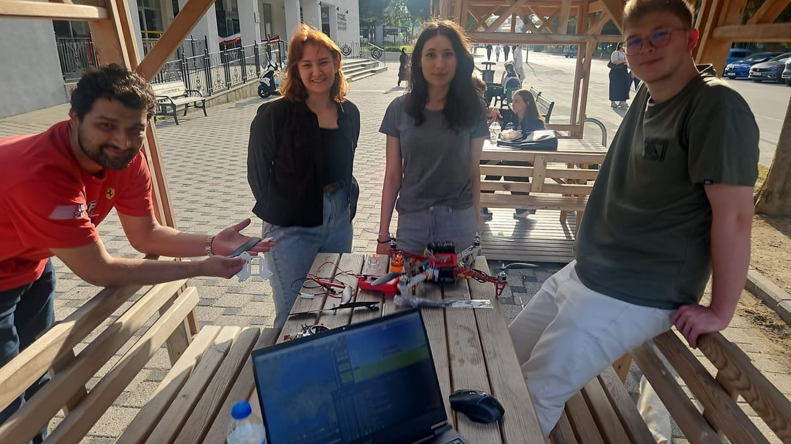
Birden fazla İHA'nın koordineli görev icra edebilmesi için haberleşme, gömülü yazılım ve kontrol algoritmaları geliştirildi.
Birden fazla İHA'nın koordineli şekilde görev icra edebilmesi için yazılım ve donanım algoritmaları geliştirildi; haberleşme sistemleri, gömülü yazılım ve kontrol algoritmaları üzerine sürü teknolojileri çalışmaları yürütüldü. 2024'te HAVELSAN Sürü İHA Yarışması'nda Türkiye 9.su olan MATRİS, 2026'da aynı yarışmada Türkiye finalisti olarak Gaziantep'te yarıştı.
Tarih
2025
Katılımcı
15 kişi
Bütçe
250.000 TL
Yer
TEKNOFEST
Araç gereç
İHA platformları, haberleşme sistemleri, gömülü yazılım ve kontrol algoritmaları
İş birliği
TEKNOFEST
33
06 · TEKNOFEST ProjeleriMATRO · Faaliyet Raporu 2025–2026
33
06 · TEKNOFEST Projeleri · TEKNOFEST · Su Altı Roket
ZEMHERİ
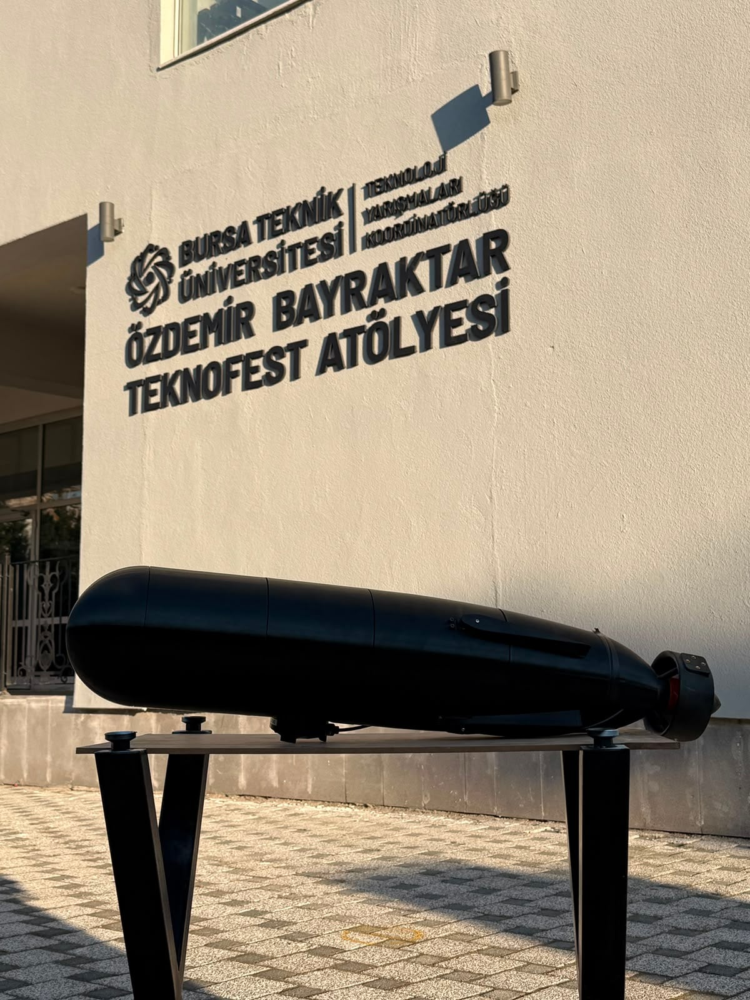
Su altından fırlatılıp hedef vurabilen roket sistemi tasarlandı; hidrodinamik gövde, fırlatma kararlılığı ve isabet üzerine çalışıldı.
Su altı ortamında fırlatma ve hedef vurma kabiliyetine sahip bir roket sistemi tasarlandı. Hidrodinamik gövde yapısının optimizasyonu, su altı fırlatma mekanizması ve hedef vuruş sistemleri üzerinde duruldu; gövde geometrisinin su içindeki hareket performansına etkisi analiz edilerek fırlatma kararlılığını ve isabet doğruluğunu artıracak çözümler değerlendirildi. Su Altı Roket kategorisine ilk kez katılan ZEMHERİ, ilk yılında ROKETSAN Su Altı Roket Yarışması'nda Türkiye finalisti oldu.
Tarih
2025–2026 sezonu
Katılımcı
15 kişi
Bütçe
270.000 TL
Yer
Bursa Teknik Üniversitesi
Araç gereç
Tasarım ve hidrodinamik analiz yazılımları, simülasyon ortamları, prototipleme ekipmanları
İş birliği
–
34
06 · TEKNOFEST Projeleri · TEKNOFEST · İnsansız Su Altı Sistemleri
İSS
Sızdırmazlık simülasyonları, otonom sürüş ve su altı nesne tespiti yapabilen prototip geliştirildi ve yarışmada performans sergilendi.
Sızdırmazlık simülasyonları, otonom sürüş ve su altı nesne tespiti yapabilen bir insansız su altı aracı prototipi geliştirildi. Aracın su geçirmezliği simülasyonlarla doğrulandı; otonom sürüş algoritmaları ile su altı nesne tespitine yönelik görüntü işleme ve sensör sistemleri araca entegre edildi. Otonom kontrol kartı, batarya sistemi ve yazılımı takım tarafından geliştirilen araçla PRUSA ekibimiz TEKNOFEST 2026 İnsansız Su Altı Aracı finalinde yarıştı.
Tarih
2025–2026 sezonu
Katılımcı
15 kişi
Bütçe
150.000 TL
Yer
Bursa Teknik Üniversitesi
Araç gereç
Prototip araç, sensörler, gömülü sistem donanımları, sızdırmazlık test ve simülasyon ortamları, görüntü işleme yazılımları
İş birliği
–
34
06 · TEKNOFEST ProjeleriMATRO · Faaliyet Raporu 2025–2026
35
06 · TEKNOFEST Projeleri · TEKNOFEST · İnsansız Deniz Aracı
LODOS
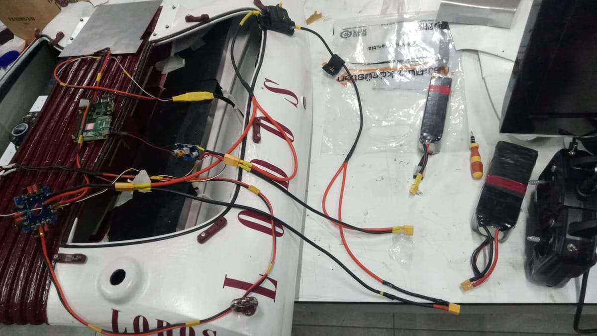
Su üstünde otonom rota takibi, engelden kaçış ve haritalama yapabilen otonom tekne geliştirildi, seyir performansı test edildi.
Su üstünde otonom rota takibi, engelden kaçış ve haritalama yapabilen otonom bir tekne geliştirildi. Otonom navigasyon algoritmaları, engel algılama ve kaçınma sistemleri ile çevresel haritalama yöntemleri üzerinde çalışıldı; aracın su yüzeyindeki seyir performansı test edildi. LODOS, TEKNOFEST İnsansız Deniz Aracı Yarışması'nda 2025'in ardından 2026'da da Türkiye finalisti oldu.
Tarih
2025–2026 sezonu
Katılımcı
15 kişi
Bütçe
120.000 TL
Yer
Bursa Teknik Üniversitesi
Araç gereç
Otonom tekne prototipi, GPS/kamera ve mesafe sensörleri, navigasyon ve haritalama yazılımları
İş birliği
–
36
06 · TEKNOFEST Projeleri · TEKNOFEST · Hava Savunma Sistemleri
GÖKSAV
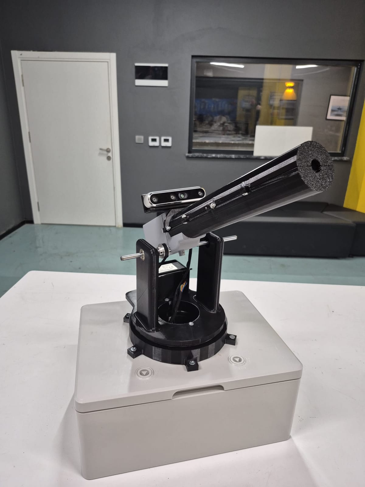
Tehdit algılama, otonom hedef takibi ve kilitlenme kabiliyetine sahip entegre hava savunma kulesi üretildi.
Tehdit algılama, otonom hedef takibi ve kilitlenme kabiliyetine sahip entegre bir hava savunma kule sistemi üretildi. Hedeflerin tespiti için görüntü işleme ve sensör sistemleri kullanıldı; otonom hedef takibi ve kilitlenme için geliştirilen kontrol algoritmaları kule mekaniğiyle entegre edildi. Takım, TEKNOFEST 2025 ASELSAN Hava Savunma Sistemleri Yarışması'nda rapor aşamasında Türkiye 3.sü olmuştu.
Tarih
2025–2026 sezonu
Katılımcı
15 kişi
Bütçe
90.000 TL
Yer
Bursa Teknik Üniversitesi
Araç gereç
Kamera ve algılama sensörleri, görüntü işleme ve kontrol yazılımları, kule mekanik donanımı
İş birliği
–
35
06 · TEKNOFEST ProjeleriMATRO · Faaliyet Raporu 2025–2026
37
06 · TEKNOFEST Projeleri · TEKNOFEST · İnsansız Kara Aracı
MATROVER
Türkiye 3.sü
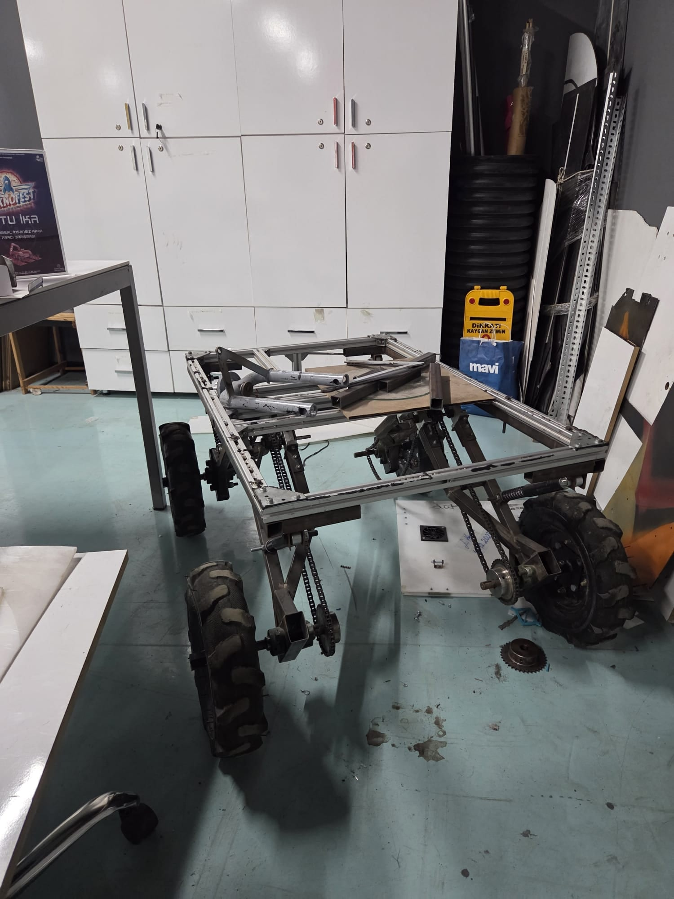
Zorlu arazide otonom sürüş, haritalama ve çevre tanıma algoritmalarına sahip platform geliştirildi. Türkiye üçüncülüğü ve en hızlı araç unvanı kazanıldı; öğrenciler için staj ortamı oluştu.
Zorlu arazi koşullarında otonom sürüş, haritalama ve çevre tanıma algoritmalarına sahip bir platform geliştirildi. MATROVER ekibimiz TEKNOFEST 2025 ASELSAN İnsansız Kara Aracı Yarışması'nda finale kalan 28 takım arasında Türkiye üçüncüsü oldu ve en hızlı araç unvanını aldı; çalışmalar öğrenciler için bir staj ortamı da oluşturdu. 2026 sezonunda LUNA İKA ekibimiz aynı kategoride Türkiye finalisti olarak Mardin'de yarıştı.
Tarih
5 Mart 2025
Katılımcı
35 kişi
Bütçe
320.000 TL
Yer
BTÜ TEKNOFEST Atölyesi / TEKNOFEST ASELSAN
Araç gereç
BTÜ Özdemir Bayraktar TEKNOFEST Atölyesi, araç ve şoför
İş birliği
TEKNOFEST, ASELSAN
38
06 · TEKNOFEST Projeleri · TEKNOFEST · Tasarım ve Operasyon
Lisans ve lisansüstü öğrencileriyle insansız kara ve hava araçlarının koordineli çalışması ve sensör füzyonu ile görev gereksinimlerinin karşılanması.
TEKNOFEST 2026'da ilk kez düzenlenen İleri Otonom Sistemler yarışması için topluluğumuzdaki lisans ve lisansüstü öğrencileri koordineli bir ekip kurdu. İnsansız kara aracı ile insansız hava aracının birlikte çalışması ve sensör füzyonuyla yarışma görev gereksinimlerinin karşılanması üzerine çalışıldı. Sezonun en yüksek bütçeli projesi TEKNOFEST, TUSAŞ ve Luna Robotics iş birliğiyle yürütüldü.
Tarih
10 Mart 2026
Katılımcı
25 kişi
Bütçe
450.000 TL
Yer
BTÜ TEKNOFEST Atölyesi / TEKNOFEST TUSAŞ
Araç gereç
BTÜ Özdemir Bayraktar TEKNOFEST Atölyesi
İş birliği
TEKNOFEST, TUSAŞ, Luna Robotics
36
06 · TEKNOFEST ProjeleriMATRO · Faaliyet Raporu 2025–2026
Fabrika otomasyon süreçlerine yönelik manipülatör tasarımı ve görüntü işleme tabanlı kalite kontrol projesi sunuldu.
Fabrika otomasyon süreçlerine yönelik manipülatör tasarımı ve görüntü işleme tabanlı kalite kontrol projesi geliştirildi. Sanayide Dijital Teknolojiler kategorisinde 2025'te Türkiye 8.si olan PUSULA ekibimiz, 2026'da KOSGEB Sanayide Robotik Uygulamalar Yarışması'nda Türkiye finalisti olarak Diyarbakır'da yarıştı.
Tarih
13 Ağustos 2025
Katılımcı
20 kişi
Bütçe
50.000 TL
Yer
BTÜ TEKNOFEST Atölyesi / TEKNOFEST
Araç gereç
BTÜ Özdemir Bayraktar TEKNOFEST Atölyesi
İş birliği
–
40
06 · TEKNOFEST Projeleri · TEKNOFEST · Üniversite Düzeyi
Robolig
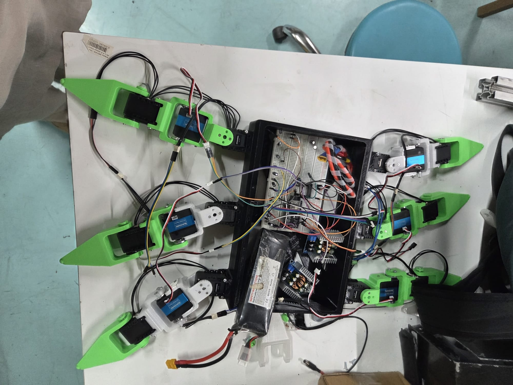
Raporda Robolig başlığı altında yer alan görsel
Endüstriyel robot kollarının programlanması, hareket planlaması ve otonom üretim hatlarının simülasyonu üzerine hazırlık çalışmaları sürüyor.
Endüstriyel robot kollarının programlanması ve otonom üretim hatlarının simülasyonu üzerine hazırlık çalışmaları yürütülüyor. Robot kollarının hareket planlaması ve programlanması ele alınıyor; üretim hattı süreçleri simülasyon ortamında modellenerek otonom çalışma senaryoları üzerinde çalışılıyor. TEKNOFEST Robolig yarışmasına üniversite düzeyinde katılım hazırlıkları sürüyor.
Tarih
2025–2026 sezonu
Katılımcı
5 kişi
Bütçe
40.000 TL
Yer
Bursa Teknik Üniversitesi
Araç gereç
Endüstriyel robot kolları, programlama ve simülasyon yazılımları, bilgisayarlar
İş birliği
–
37
06 · TEKNOFEST ProjeleriMATRO · Faaliyet Raporu 2025–2026
41
06 · TEKNOFEST Projeleri · TEKNOFEST · Nükleer Enerji Teknolojileri
ALHAZEN
Nükleer santral güvenliği, radyasyon takibi ve otonom müdahale robotları üzerine teorik ve pratik tasarım çalışması.
TENMAK iş birliğiyle TEKNOFEST Nükleer Enerji Teknolojileri Tasarım Yarışması kapsamında nükleer santrallerin güvenliği, radyasyon takibi ve otonom müdahale robotları üzerine teorik ve pratik tasarım yapıldı. Çevre ve enerji teknolojileri alanında çalışan ALHAZEN, TEKNOFEST 2025 SANKO Çevre ve Enerji Teknolojileri Yarışması'nda Türkiye 7.si olmuştu.
Tarih
9 Aralık 2025
Katılımcı
12 kişi
Bütçe
15.000 TL
Yer
BTÜ TEKNOFEST Atölyesi / TEKNOFEST TENMAK
Araç gereç
BTÜ Özdemir Bayraktar TEKNOFEST Atölyesi
İş birliği
TENMAK
42
06 · TEKNOFEST Projeleri · TEKNOFEST · Tarım Teknolojileri
ASHİNA İNOVASYON
Tasarlanan ürünün montajlanmış hâli
Tarım arazilerinde otonom analiz, hastalık tespiti ve verimli ilaçlama yapabilen robotik sistem tasarlandı.
Tarım arazilerinde otonom analiz, hastalık tespiti ve verimli ilaçlama yapabilen bir robotik sistem tasarlandı. Luna Robotics ve Crowtec iş birliğiyle yürütülen çalışmada tasarlanan ürün montajlandı. Takım, tarım sektörünün gerçek saha ihtiyaçlarına yönelik akıllı ve sürdürülebilir çözümler üretmek amacıyla kuruldu.
Tarih
19 Şubat 2025
Katılımcı
12 kişi
Bütçe
18.000 TL
Yer
BTÜ TEKNOFEST Atölyesi / TEKNOFEST
Araç gereç
BTÜ Özdemir Bayraktar TEKNOFEST Atölyesi
İş birliği
Luna Robotics, Crowtec
38
Bölüm07
Takım Ruhu
Atölyede uzun saatler geçiren ekiplerimizi sahada, parkta ve spor salonunda da bir araya getirdik.
3faaliyet
105katılım
5.400 TLbütçe
43MATRO Voleybol
44MATRO Halı Saha
45MATRO Piknik
39
07 · Takım RuhuMATRO · Faaliyet Raporu 2025–2026
43
07 · Takım Ruhu
MATRO Voleybol
İletişimi ve takım çalışmasını geliştirmek için topluluk içi voleybol turnuvası.
Topluluk üyeleri arasındaki iletişimi ve takım çalışmasını geliştirmek amacıyla BTÜ spor tesislerinde topluluk içi bir voleybol turnuvası düzenledik.
Tarih
2026
Katılımcı
30 kişi
Bütçe
500 TL
Yer
BTÜ Spor Tesisleri
Araç gereç
Voleybol sahası, voleybol topları, spor ekipmanları
İş birliği
–
44
07 · Takım Ruhu
MATRO Halı Saha
Atölyede ve teknik çalışmalarda aktif arkadaşlarımızın motivasyonu için vizeler öncesi dostluk maçı.
Vizeler öncesindeki yoğun tempoya kısa bir ara vererek topluluk üyeleri ve teknik ekiplerle halı saha maçında bir araya geldik. Amacımız atölyede ve teknik çalışmalarda aktif olarak çalışan arkadaşlarımızın motivasyonunu artırmaktı. Farklı proje takımlarından üyelerin atölye dışında buluşması topluluk içi iletişimi güçlendirdi.
Tarih
12 Nisan 2026
Katılımcı
35 kişi
Bütçe
2.200 TL
Yer
BTÜ Halı Saha
Araç gereç
–
İş birliği
–
40
07 · Takım RuhuMATRO · Faaliyet Raporu 2025–2026
45
07 · Takım Ruhu
MATRO Piknik
Dönem sonu stresini azaltmak ve ekip ruhunu güçlendirmek için bahar pikniği.
Dönem sonu stresini azaltmak, üyeler arasındaki sosyal etkileşimi artırmak ve ekip ruhunu güçlendirmek için Hüdavendigar Kent Parkı'nda piknik düzenledik. Yönetim kurulumuz ve takım arkadaşlarımızla gün boyunca sohbet ettik, birlikte yemek yedik ve takım oyunları oynadık.
Tarih
16 Mayıs 2026
Katılımcı
40 kişi
Bütçe
2.700 TL
Yer
Hüdavendigar Kent Parkı
Araç gereç
Piknik ekipmanları, oturma alanları, toplu etkinlik malzemeleri
İş birliği
–
41
KapanışMATRO · Faaliyet Raporu 2025–2026
Fotoğraf
Sahadan kareler
Takımlarımız atölyede, test alanında ve TEKNOFEST final alanlarında.
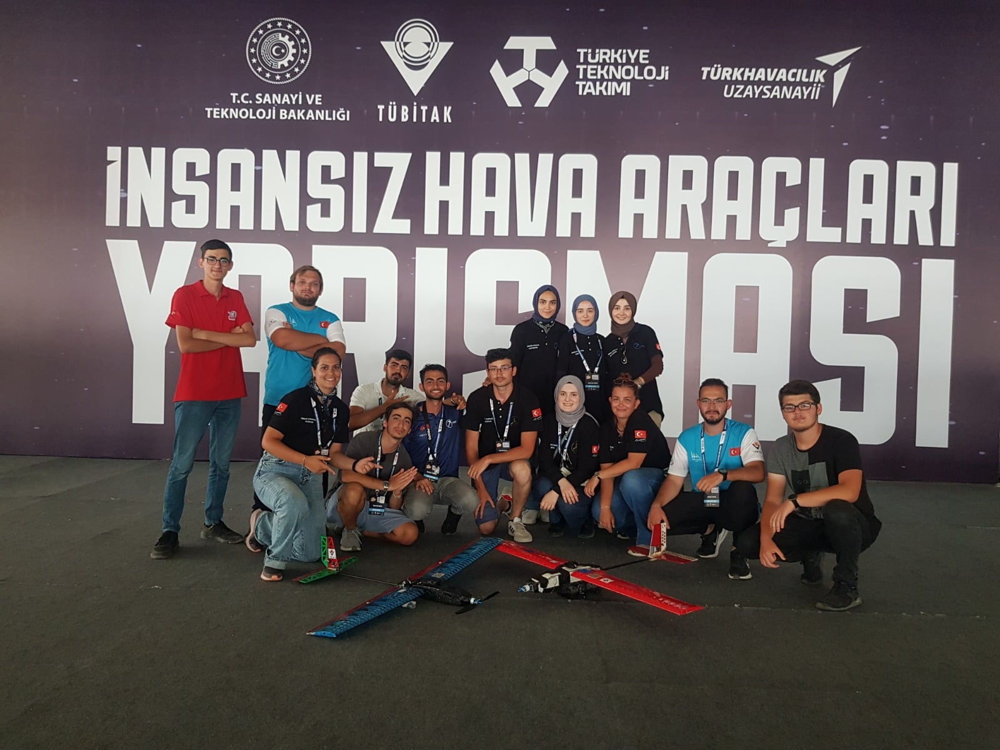
ASHİNAMATROVER
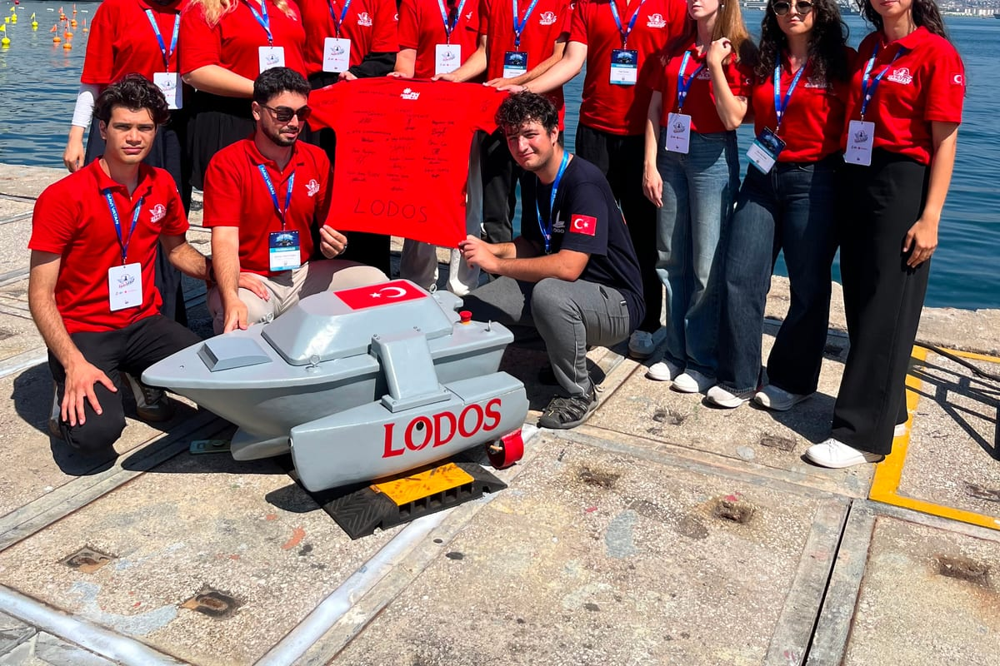
LODOSİSS havuz testiZEMHERİ
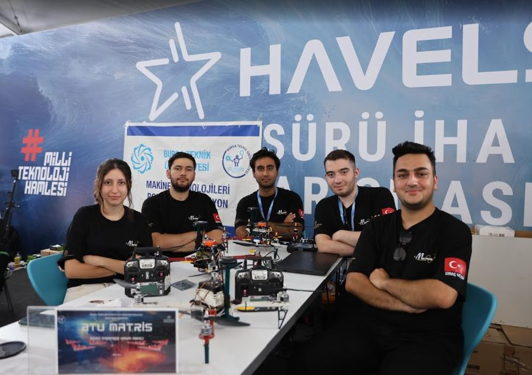
MATRİS
42
KapanışMATRO · Faaliyet Raporu 2025–2026
Arşiv
2013'ten bugüne 50 derece
Topluluğumuz 2020-2025 döneminde 35 takımı ile ilk 10'a girdi, 342 yarışmacı ile finalist oldu ve 22 derece ile özel ödül kazandı. 2026 sezonunda ise sekiz takımımız TEKNOFEST finallerinde üniversitemizi temsil etti.
2026ASHİNAUluslararası İnsansız Hava AraçlarıTEKNOFEST — TÜBİTAKTürkiye Finalisti
2026LUNA İKAİnsansız Kara AracıTEKNOFEST — ASELSANTürkiye Finalisti
2026LODOSİnsansız Deniz AracıTEKNOFEST — ASELSANTürkiye Finalisti
DR. TABLETMERCAN BALIKÇILIKPOCKETBOOKOFF-EEKOMAGENE
46
KapanışMATRO · Faaliyet Raporu 2025–2026
Gelecek sezon
2026-2027 yarışma hedeflerimiz
2026-2027 döneminde yedi ayrı yarışma takımıyla ulusal ve uluslararası arenada üniversitemizi temsil etmeyi hedefliyoruz. Takım ön başvurularında bu kategoriler arasından en fazla üç tercih yapılabiliyor.